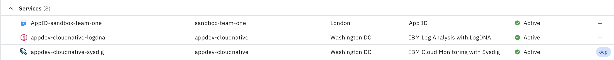
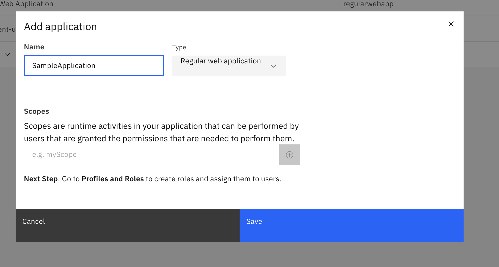
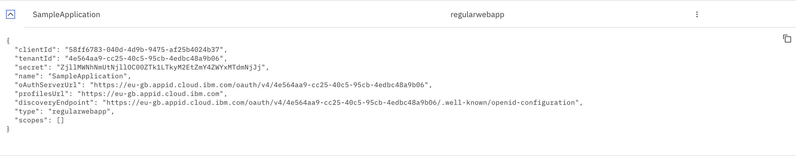
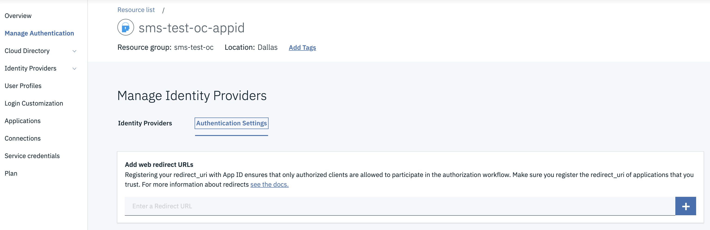
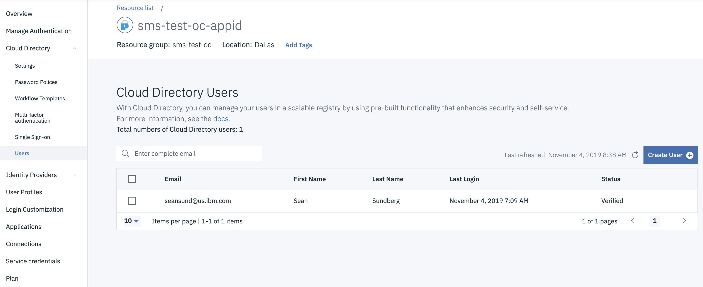
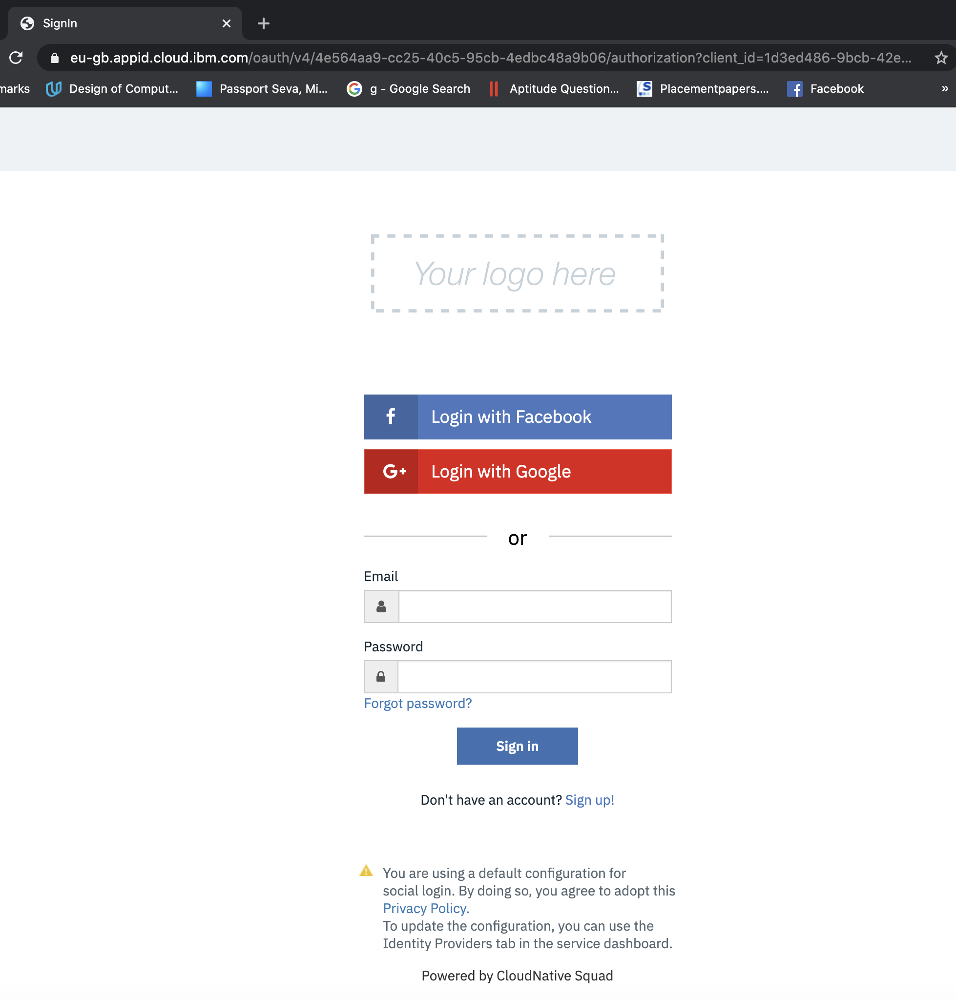

Authentication with App ID
Securing Inventory App with App ID
To secure the application we are using the capabilities available within the IBM Cloud platform to enable integration with AppID.
With Openshift 3.11, a simple annotation was used on the ingress to enable Appid. In Openshift 4.x, Red Hat OpenShift on IBM Cloud annotations (ingress.bluemix.net/[annotation]) and NGINX annotations (nginx.ingress.kubernetes.io/[annotation_name]) are not supported for the router or the Ingress resource.
With Openshift 4.x, AppID integration is enabled with SDKs.
Prerequisites
The following prerequisites are required for AppID integration:
- An instance of the App ID service: In IBM Cloud Dashboard, go to "Services" and select the AppID instance.

-
A set of service credentials:
- In AppID instance, go to "Application".
- Click on "Add application".
- Enter your application name
- Select the type as Regular web application.
- Click on Save to create the service credentials for your application.

- After saving, your application credentials will get created.Click on the down Arrow at the left end of your application name and get the credentials.

-
yarnversion 1.22.19 or higher. nodeversion 16.16.0 or higher (it is recommended that you use an LTS version).
Note
To install yarn run the command npm install -g yarn
Enable Appid in the solution
Installation
- By using the command line, change to the directory that contains your Node.js app.
-
Install the AppID service and other dependencies.
-
Obtain your credentials by navigating to the Applications tab of the AppID dashboard as mentioned in Prerequisites.
-
Obtain the application as mentioned in AppID Redirect Url Config.
Create binding secret for appid in your namespace
- Login to the IBM Cloud cluster where your workshop-team-one ocp cluster resides.
- Login to your ocp cluster using the oc cli.

-
Click on "Copy Login Command". It will redirect to a new page.
-
Click the display token link. Copy the "Log in with this token" command & login to
occli, it should look like this : -
Navigate to your namespace where you are running the inventory solution pipeline and create the binding secret for He the Appid instance on the cloud account
Note
Save the binding name, you will use it later
Update the configuration values in the configuration files
-
Put these credentials in server/config/mappings.json to be referred by application:
-
Add the following parameter in
values.yamlalong with its value:
Adding the dependencies
- Add the following require definitions to your
server/server.js:server/server.jsconst express = require('express'); const session = require('express-session') const passport = require('passport'); const WebAppStrategy = require("ibmcloud-appid").WebAppStrategy; const CALLBACK_URL = "/ibm/cloud/appid/callback"; const appidConfig = require("./config/mappings.json");
Activate the appid integration
-
In server.js, set up your express app to use express-session middleware.
-
In the same file, initialize the SDK using the information obtained in the previous steps.
-
In the same file, configure passport with serialization and deserialization. This configuration step is required for authenticated session persistence across HTTP requests. For more information, see the passport docs
-
Add the following code to your server.js to issue the service redirects.
Adding environment variables to deployment.yaml
- Open the
deployment.yamlfile and add environment variables that use those values to the top of the existingenvblock:
AppID redirect url config
-
Get the ingress for the UI component by running
igc ingress -n inventory-${UNIQUE_SUFFIX}-dev. -
Open the IBM Cloud resource list -
https://cloud.ibm.com/resources -
Open the AppID instance to the
Manage Authentication->Authentication Settingsview
-
Add the redirect url for the application to the web redirect URLs. The redirect url will have the following form:
{ingress url}/ibm/cloud/appid/callbacke.g.
https://inventory-manangement-ui-dev.sms-test-oc-cluster.us-east.containers.appdomain.cloud/ibm/cloud/appid/callback
Add users to AppID
-
Open the AppID instance to
Cloud Directory->Users
-
Add yourself as a user with an email address, name, and password#
Commit and push the changes
- Commit your local changes and push them to your remote repository
- Your previously defined pipeline should be launched and the new app should be deployed afterwards
Access the UI
-
Open a browser to the UI Application URL
-
You should be met with the AppID login screen. (This screen can be customized from the AppID service console but for now we are showing the default screen.)

-
Provide the email address and password you configured in the previous steps. You should be granted access to the UI.